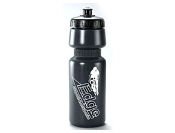

<section id="portfolio">
    <div class="container">
        <div class="center">
            <h2>Water Bottle</h2>
        </div>
        <ul class="portfolio-filter text-center">
            <li><a class="btn btn-default active" href="#" data-filter="*">All Water Bottle</a></li>
        </ul>
        <!--/#portfolio-filter-->
        <div class="row">
            <div class="portfolio-items">
                <div class="portfolio-item col-xs-12 col-sm-4 col-md-3">
                    <div class="recent-work-wrap">
                        
                        <div class="overlay">
                            <div class="recent-work-inner">
                                <h3><a target="_blank" href="Spec-misc.html#wb1508">1508-A <i class="fa fa-hand-o-up"></i></a></h3>
                                <p>Wide mouth water bottle with screw-in cap. Material:LDPE. 680cc;H:21cm/A:7.2cm.</p>
                                <a class="preview" href="images/portfolio/full/1508-A.png" rel="prettyPhoto"><i class="fa fa-eye"></i> View</a>
                            </div>
                        </div>
                    </div>
                </div>
                <!--/.portfolio-item-->
            </div>
        </div>
    </div>
</section>
<!--/#portfolio-item-->